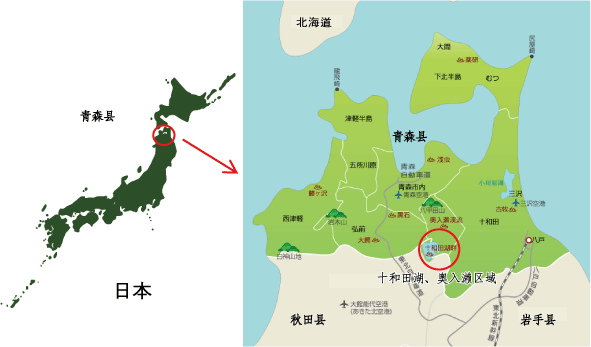

十和田八幡平国立公园奥入濑溪流拥有需流传给后世的、宝贵的自然环境和美丽风景，保护工作非常重要。同时，也是每年有县内外近280万人造访的青森县代表性名胜景观，希望今后能实现进一步的观光活性化。
为此，产业观光、自然环境、行政各机关合作成立“奥入濑溪流生态旅游项目实行委员会”，并于2008年开始开展“奥入濑溪流生态旅游项目”，官民合力，推动有助于保护奥入濑溪流自然环境的活动。
奥入濑溪流生态旅游项目通过，有助于保护奥入濑溪流自然环境的活动以及10月第5周的私家车交通管制的活动，力争来访游客及青森县民对自然环境保护的理解、渗透、启发，以求该地域的永久性保护同时活用自然环境实现该地域的地域振兴和观光振兴。
官民合作，共同行动，提升奥入濑溪流的自然价值，向全国发布奥入濑溪流原本的魅力。
